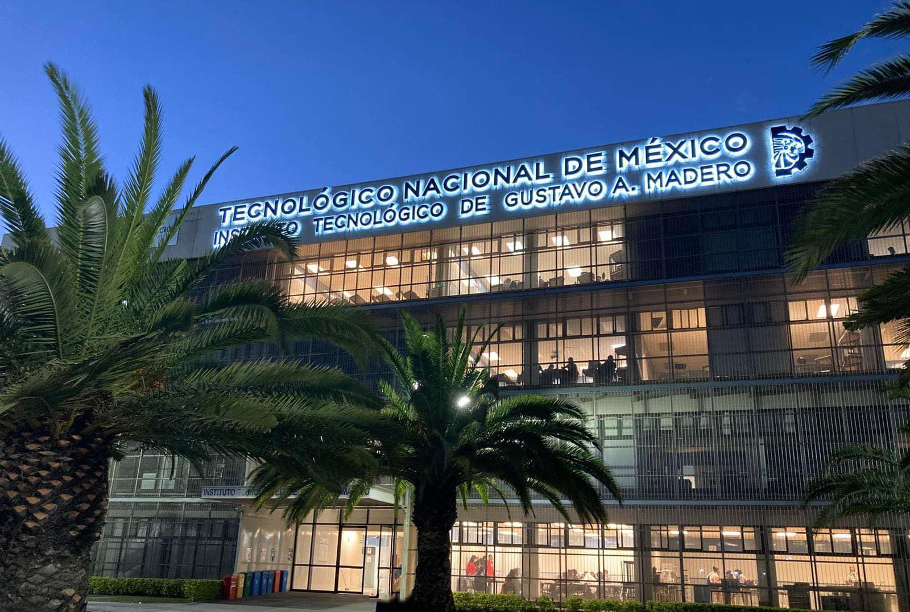

Sistemas Operativos
Proyecto de la unidad 2 de la materia de Sistemas Operativos del ITGAM
por la profesora Lorena López Sánchez 👩🏻💻
Integrantes
- Gonzalez Andrade Juan Manuel
- Gonzalez Salazar Evelyn Valeria
- Montaño Dominguez Brenda Itzel
- Zavala Guerrero Gabriela
- 6TA
